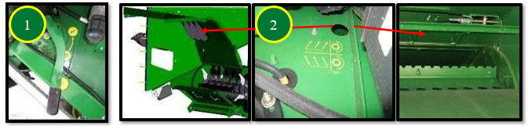

Répartition des résidusDéflecteur de rafles n°1 : position relevée / petites céréales.Ailettes du déflecteur arrière ou volet de broyage/andainage n°2 : réglables pour améliorer la répartition des résidus. Parent topic: Residus